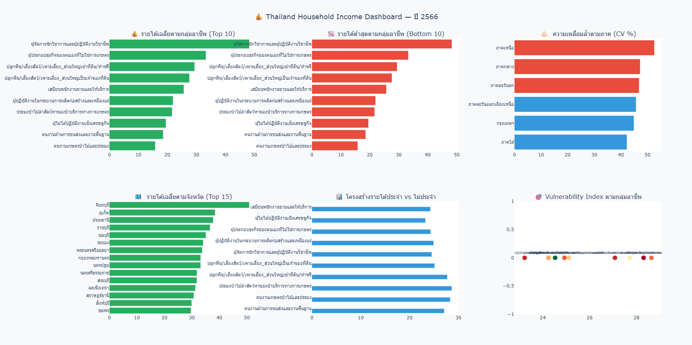

TSUCON 2026 : Scaling Social Innovation for Global Sustainable Futures
💰 การวิเคราะห์โครงสร้างรายได้ของครัวเรือนไทยใน ปี 2566 โดยใช้เทคนิคการเล่าเรื่องด้วยข้อมูลร่วมกับการประยุกต์ใช้โมเดลภาษาขนาดใหญ่


- 🟢 5 กลุ่มรายได้สูงสุด: ผู้จัดการนักวิชาการฯ (48,293 บาท/เดือน, +84%), ผู้ประกอบธุรกิจตนเอง (33,299 บาท, +27%), เกษตรกรผู้เช่าที่ดิน (29,402 บาท), เจ้าของที่ดินเกษตร (27,623 บาท), เสมียนพนักงานขาย (25,684 บาท)
- 🔴 5 กลุ่มรายได้ต่ำสุด: คนงานเกษตรป่าไม้ฯ (15,804 บาท, -40%), ขนส่งและงานพื้นฐาน (18,547 บาท), ผู้ไม่ปฏิบัติงานเชิงเศรษฐกิจ (19,515 บาท), ประมง/ป่าไม้ (21,635 บาท), กระบวนการผลิต (21,971 บาท)
- 📊 Gap รายได้สูงสุด/ต่ำสุด: 3.1 เท่า (ระหว่างกลุ่มอาชีพ) — สะท้อนความแตกต่างของทุนมนุษย์และประเภทการจ้างงาน
- 🧠 เหตุผล: กลุ่มผู้ประกอบการ/วิชาชีพมีทั้งค่าตอบแทนแรงงานและกำไรธุรกิจ ขณะที่แรงงานเกษตร/อิสระพึ่งพาฤดูกาล ขาดหลักประกันรายได้
- 🎯 ข้อเสนอเชิงนโยบาย: ยกระดับค่าแรงขั้นต่ำและ social safety net สำหรับกลุ่มแรงนอกระบบ, ส่งเสริมอาชีพเสริมและ upskill ในภาคเกษตร


- ⚠️ จังหวัดที่มี CV (ค่าความเหลื่อมล้ำ) สูงสุด: จันทบุรี (CV=95.7%, range 10.0x), หนองบัวลำภู (79.8%), ศรีสะเกษ (79.7%), ยโสธร (76.0%), นราธิวาส (73.6%) → มีทั้งครัวเรือนรวยและจนอยู่ร่วมกันสูง
- 🔻 จังหวัดรายได้เฉลี่ยต่ำสุด (ควรยกระดับโดยรวม): นราธิวาส (17.5K บาท), เชียงราย (17.5K), พะเยา (18.6K), ขอนแก่น (18.9K), แม่ฮ่องสอน (18.9K) — ต่ำกว่าค่าเฉลี่ยประเทศ 7,000–8,800 บาท
- 🏙️ รายได้สูงสุดกระจุกตัว: กรุงเทพมหานครและปริมณฑล, ภาคตะวันออก (ระยอง, ชลบุรี) สะท้อนโครงสร้างอุตสาหกรรมและการจ้างงาน
- 📌 เหตุผลเชิงโครงสร้าง: จังหวัดเมือง/นิคมอุตสาหกรรมมีทั้งแรงงานทักษะสูงและแรงงานรับจ้างทั่วไปทำให้ CV สูง จังหวัดรายได้ต่ำพึ่งพาเกษตรเป็นหลัก ขาดโครงสร้างพื้นฐานทางเศรษฐกิจ
- ⚙️ ข้อเสนอ: จังหวัด CV สูง → นโยบายลดช่องว่าง (ค่าแรงขั้นต่ำที่สูงขึ้น, การเข้าถึงสวัสดิการ) จังหวัดรายได้ต่ำ → ดึงดูดอุตสาหกรรม, พัฒนาโครงสร้างพื้นฐาน, สนับสนุน Special Economic Zone



- 🎯 กลุ่มที่พึ่งพารายได้ไม่ประจำมากที่สุด (เสี่ยง): เกษตรกรผู้เช่าที่ดิน, เกษตรกรเจ้าของที่ดิน, ประมง/ป่าไม้, คนงานเกษตรป่าไม้และประมง — มีสัดส่วนรายได้ไม่ประจำสูงถึง 20-35% ของรายได้รวม
- 🏦 กลุ่มมั่นคง: ลูกจ้างผู้จัดการ/นักวิชาการ, เสมียนพนักงานขาย, ผู้ปฏิบัติงานในกระบวนการผลิต — มีรายได้ประจำ >70% สร้างความมั่นคงทางการเงิน
- 📉 กลุ่มกระจุกตัวแหล่งเดียว: ครัวเรือนบางกลุ่มพึ่งพารายได้จากแรงงานหลักเพียงแหล่งเดียว → เสี่ยงสูงหากตกงานหรือวิกฤตเศรษฐกิจ
- 🌾 สาเหตุ: ภาคเกษตร/ประมง/อาชีพอิสระไม่มีสัญญาจ้างหรือระบบสวัสดิการ รายได้แปรผันตามฤดูกาลและตลาด
- 🛡️ นโยบายที่แนะนำ:
- • Unemployment Insurance / Safety net สำหรับกลุ่ม off-season
- • ส่งเสริมการกระจายรายได้ (อาชีพเสริม, การแปรรูปสินค้าเกษตร)
- • Universal Basic Income หรือเงินอุดหนุนแบบมีเงื่อนไขสำหรับครัวเรือนที่มีรายได้ไม่ประจำสูง
- • การเข้าถึงสินเชื่อเพื่อการเกษตรและประกันรายได้เกษตรกร
- ช่องว่างระหว่างกลุ่มอาชีพ 3.1 เท่า
- ผู้จัดการ/วิชาชีพสูงสุด, แรงงานเกษตรต่ำสุด
- ความแตกต่างด้านการศึกษาและตลาดแรงงาน
- Action: ค่าแรงขั้นต่ำ, Upskilling ภาคเกษตร
- จังหวัดจันทบุรี หนองบัวลำภู มี CV สูงที่สุด
- นราธิวาส เชียงราย รายได้ต่ำสุด ต้องยกระดับ
- ความเหลื่อมล้ำสูงในเมืองอุตสาหกรรม
- Action: ลงทุนโครงสร้างพื้นฐานในพื้นที่รายได้ต่ำ, พัฒนาเขตเศรษฐกิจพิเศษ
- เกษตรกรพึ่งรายได้ไม่ประจำ >20% → เปราะบาง
- ลูกจ้างประจำมั่นคง มีสัดส่วนเงินเดือนสูง
- ระบบ social protection ไม่ครอบคลุมแรงงานนอกระบบ
- Action: ประกันรายได้เกษตรกร, income support, ส่งเสริมอาชีพเสริม
🏆 ภาพรวมความเหลื่อมล้ำ 2 มิติหลัก
✔️ ระหว่างกลุ่มอาชีพ: ผู้ประกอบการ/วิชาชีพ กับ เกษตรกร/แรงงานอิสระ
✔️ ระหว่างพื้นที่: กรุงเทพฯ-ภาคกลาง vs ภาคอีสาน-เหนือ-ชายแดนใต้
⚠️ ความเสี่ยงซ่อนเร้น: กลุ่มที่มีรายได้ไม่ประจำสูงเปราะบางต่อวิกฤต ภัยแล้ง และโรคระบาด มากกว่ากลุ่มอื่นอย่างมีนัยสำคัญ
🔎 นโยบายระยะยาว: เพิ่มความมั่นคงทางรายได้ทุกกลุ่มอาชีพ ลดความเหลื่อมล้ำเชิงพื้นที่ พร้อมขยายหลักประกันทางสังคมสู่ภาคการเกษตรและแรงงานอิสระ
📌 ที่มาและการประมวลผล: สำนักงานสถิติแห่งชาติ (NSO), ข้อมูลรายได้เฉลี่ยต่อเดือนของครัวเรือน ปี 2566. วิเคราะห์โดย Data Storytelling · ใช้เทคนิค EDA ประกอบด้วย Cleaning, Distribution Analysis, การคำนวณ Coefficient of Variation (CV) และการจำแนกโครงสร้างรายได้ตาม soc_eco_class และ source_income1.
🔗 แหล่งข้อมูลดั้งเดิม: data.go.th/dataset/os_08_00007 · ตัวเลขอ้างอิงตาม real data 77 จังหวัด, รายได้เฉลี่ย 26,279 บาท/เดือน, P1=4 บาท ถึง P99=55,238 บาท
🔬ผู้พัฒนา: นายพิษณุ ทองศรี · 👤 ที่ปรึกษา: ผศ.สุดา เธียรมนตรี
📧ติดต่อผู้พัฒนา:pitsanu2448@gmail.com · https://pitsanu2448.github.io/portfolio.html